Quick and Fruity Oatmeal
A great winter breakfast and something you can change every day by trying out different fruit. Try fresh or frozen fruit! This is an easy breakfast you can make, but always ask for a parent’s help.
|
| ½ cup of dried “old fashion” oats |
| ¼ cup of blueberries or mixed berries (frozen) |
| 1 cup water |
| DIRECTIONS: In a microwave safe bowl add oatmeal and pour water over. Be sure there is plenty of extra room in the bowl for the oatmeal to expand. Cook on high for 5 minute in the microwave. Add water and mix until you’ve reached your desired consistency. Stir and let cool. |
| 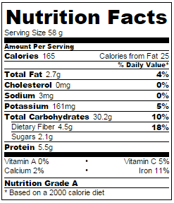 *All Nutrition Facts and Analysis according to caloriecount.about.com |
|
Yogurt and Fruit covered English Muffins
Delicious as a quick, healthy breakfast, or a light snack. Try different fruit depending on the season. This is an easy breakfast you can make, but always ask for a parent’s help.
|
INGREDIENTS:
|
Lightly toast the English muffin halves in a toaster.
Spread each half with pineapple yogurt. Top each half with strawberries and pineapple.
Serve while English muffins are still warm.
Spread each half with pineapple yogurt. Top each half with strawberries and pineapple.
Serve while English muffins are still warm.
 *All Nutrition Facts and Analysis according to caloriecount.about.com |
Good Points: |
Peanut Butter Banana Smoothie
A protein-packed breakfast smoothie will give your brain a kick-start any day! This is an easy breakfast to make but you should ask a parent or guardian for assistance with the blender.
|
INGREDIENTS:
|
| DIRECTIONS: In a blender add all ingredients and blend until smooth, about 30 seconds. |
| 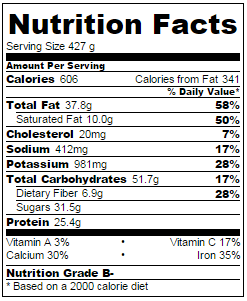 *All Nutrition Facts and Analysis according to caloriecount.about.com |
|
Veggie-licious Quesadillas
A great way to try new veggies… with cheese! The vegetables in this recipe can be traded out for others that are in season. Challenge yourself and try something new each week. Make sure to ask a parent or guardian for help with this recipe as it requires a knife and use of the stove.
| Prep Time: 5 Minutes Cook Time: 15 Minutes |
Ready In: 30 Minutes Servings: 2 |
| INGREDIENTS: | |||||||||
| 2 tablespoons chopped red bell pepper |
| 2 tablespoons chopped zucchini |
| 2 tablespoons chopped yellow squash |
| 2 tablespoons chopped red onion |
| 2 tablespoons chopped mushrooms |
| 1/3 tablespoon olive oil |
| cooking spray |
| 2 (9 inch) whole wheat tortillas |
| 1/3 cup shredded reduced-fat sharp cheese |
| Cheddar cheese |
| DIRECTIONS:
In a large nonstick pan, cook red pepper, zucchini, yellow squash, onion, and mushrooms in olive oil over medium to medium-high heat for about 7 minutes, or until just tender. Remove vegetables from pan.
Coat the same pan with cooking spray, and place one tortilla in pan. Sprinkle half of the cheese evenly over tortilla, and layer half of the vegetable mixture over the cheese. Top with a second tortilla. Cook until golden on both sides, for approximately 2 to 3 minutes per side. Remove quesadilla from pan, and repeat. Cut each quesadilla into 8 triangles with a pizza cutter. Serve hot. |
| 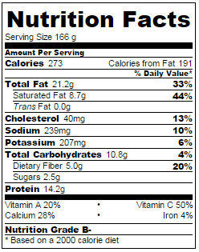 *All Nutrition Facts and Analysis according to caloriecount.about.com |
|
Easy Peasy Hummus
Hummus is a yummy, nutty tasting dip. Eat it with carrot or celery sticks for a light snack, or even spread it on a sandwich with turkey. This is an easy item to make but you should ask a parent or guardian for assistance with the blender.
|
| 1 (15 ounce) can garbanzo beans, drained, liquid reserved | 1 clove garlic, crushed | 2 teaspoons ground cumin | 1/2 teaspoon salt | 1 tablespoon olive oil |
| DIRECTIONS:
In a blender or food processor combine garbanzo beans, garlic, cumin, salt, and olive oil. Blend on low speed, gradually adding reserved bean liquid, until desired consistency is achieved.
Serve with raw carrots, celery sticks, broccoli or any other fresh raw veggies for a healthy, protein-packed snack and add baked pita bread for a fun lunch. |
| 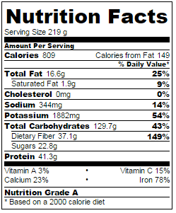 *All Nutrition Facts and Analysis according to caloriecount.about.com |
|
Homemade Herbed Chicken Nuggets
Baked chicken nuggets made at home are delicious AND healthy! Make sure to ask a parent or guardian for help with this recipe as it requires a knife and use of the oven.
| Prep Time: 25 Minutes Cook Time: 15 minutes |
Ready In: 40 Minutes Servings: 4 |
| 4 skinless, boneless chicken breasts |
| 2 eggs, beaten |
| 1 tablespoon water |
| 1 teaspoon chopped fresh parsley |
| 1/2 teaspoon dried thyme |
| 1 pinch crushed red pepper flakes (optional) |
| 1/2 cup dried bread crumbs, seasoned |
| 1/2 cup wheat germ |
| 1 teaspoon dried basil |
| 1 teaspoon ground black pepper |
| 1 tablespoon vegetable oil |
| DIRECTIONS:
Preheat oven to 425 degrees F (220 degrees C). Spray a baking sheet with non-stick cooking spray. Trim any fat from chicken and cut into 1-inch cubes. In a bowl, beat the eggs with the water and add the chicken.
Combine the parsley, thyme, red pepper, bread crumbs, wheat germ, basil and pepper. Stir in the oil with a fork and mix well to distribute evenly. Pour seasoning mixture into a re-sealable plastic bag and toss the chicken pieces to coat. Place coated chicken pieces on the prepared baking sheet and bake at 425 degrees F (220 degrees C) for 10 minutes, turn the pieces, and bake for an additional 5 minutes. |
| 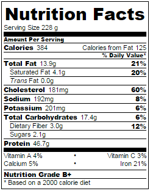 *All Nutrition Facts and Analysis according to caloriecount.about.com |
|
Super-Quick Tuna Casserole
Make this super-quick and easy tuna casserole for your family and show them how easy and fun cooking and eating together can be! Make sure to ask a parent or guardian for help with this recipe as it requires use of the oven.
|
| INGREDIENTS: | |||||||
| 1 (7.25 ounce) package macaroni and cheese mix |
| 1 (10.75 ounce) can condensed cream of mushroom soup |
| 1 (9 ounce) can tuna, drained |
| 1 (10 ounce) can peas, drained |
| DIRECTIONS:
Prepare macaroni and cheese mix according to package directions.
Stir in the cream of mushroom soup, tuna and peas. Mix well, and heat until bubbly. |
| 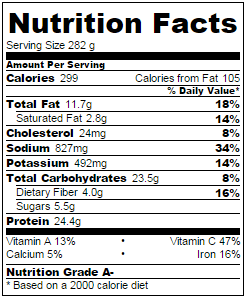 *All Nutrition Facts and Analysis according to caloriecount.about.com |
|
Hawaiian Chicken Kabobs
Add pineapple to this chicken dish and instantly have a Hawaiian treat! Make sure to ask a parent or guardian for help with this recipe as it requires use of a grill or oven.
|
| INGREDIENTS: | ||||||||
| 1 ½ tablespoons soy sauce |
| 1 ½ tablespoons brown sugar |
| 1 tablespoons sherry |
| 1/2 tablespoon sesame oil |
| 1/8 teaspoon ground ginger |
| 1/8 teaspoon garlic powder |
| 4 skinless, boneless chicken breast halves - cut into 2 inch pieces |
| 1/2 (20 ounce) can pineapple chunks drained |
| skewers |
| DIRECTIONS:
In a shallow glass dish, mix the soy sauce, brown sugar, sherry, sesame oil, ginger, and garlic powder. Stir the chicken pieces and pineapple into the marinade until well coated. Cover, and marinate in the refrigerator at least 2 hours.
Preheat grill to medium-high heat. Lightly oil the grill grate. Thread chicken and pineapple alternately onto skewers. Grill 15 to 20 minutes, turning occasionally, or until chicken juices run clear. |
| *All Nutrition Facts and Analysis according to caloriecount.about.com |
|
Easy Greek Pork Chops
Learn to make pork chops that are never dry and always yummy! Serve with a large side of broccoli and a small portion of rice or potatoes for a complete dinner. Make sure to ask a parent or guardian for help with this recipe as it requires a knife and use of the oven.
| Prep Time: 10 min Cook Time: 8 min |
Ready In: 1 hour Serves: 2 |
| INGREDIENTS: |
| 2 pork chops, bone in |
| 2 tablespoons extra virgin olive oil |
| 1 teaspoon red wine vinegar |
| 2 tablespoons oregano |
| 1 teaspoon whole grain mustard |
| 1 teaspoon rosemary |
| Salt and pepper to taste |
| DIRECTIONS:
Lay pork chops flat in a sealable container. Pour olive oil, red wine vinegar and mustard over the pork chops. Secure cover and shake so that the liquid coat both sides. Add oregano, rosemary, pepper and a pinch of salt to each side. Cover and let sit in the refrigerator for at least 1-2 hours.
Heat a pan over medium heat, place both pork chops directly into the pan and cover with the remaining oil in the container. Do not stir or move around. Cook for 4 minutes on each side. It will be done when you cut into the middle and it’s not pink anymore. |
| 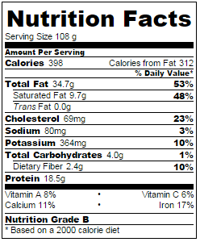 *All Nutrition Facts and Analysis according to caloriecount.about.com |
|
Smooth-Berry Delight
A light but filling smoothie for an afternoon snack to get you through the rest of your day. This is an easy item to make but you should ask a parent or guardian for assistance with the blender.
| Prep Time: 5 min |
Ready In: 5 minutes Serves: 2 |
| INGREDIENTS: |
| 1 cup mixed berries |
| 1/2 cup strawberry flavored yogurt |
| 1/2 cup milk |
| 1/2 banana |
| DIRECTIONS: In a blender, combine all ingredients. Cover, and blend until smooth. Pour into glasses and serve.
|
| 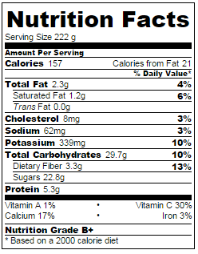 *All Nutrition Facts and Analysis according to caloriecount.about.com |
|
Greenberry Smoothie
Add some spinach to any smoothie to up your nutrition and get more energy. This is an easy item to make but you should ask a parent or guardian for assistance with the blender.
| Prep Time: 5 min |
Ready In: 5 minutes Serves: 1 |
| INGREDIENTS: |
| 1 cups frozen spinach |
| 1 tablespoons honey |
| 1 cups frozen strawberries |
| 1/4 cup ice |
| 1/2 banana |
| DIRECTIONS: Combine the spinach, strawberries, banana, honey, and ice in a blender. Blend until smooth. Serve immediately.
|
| 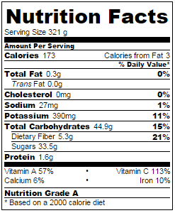 *All Nutrition Facts and Analysis according to caloriecount.about.com |
|
Ants on a Log
Try this fun snack you can enjoy making AND eating. This is an easy item to make but you should ask a parent or guardian for assistance.
|
| INGREDIENTS: |
| 1 stalk of celery |
| 2-3 tablespoons peanut butter |
| 10 raisins |
| DIRECTIONS: Cut the celery stalks in half. Spread with peanut butter. Sprinkle with raisins.
|
| 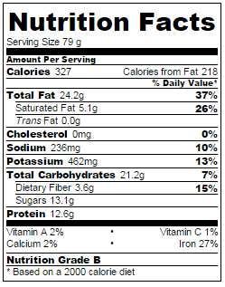 *All Nutrition Facts and Analysis according to caloriecount.about.com |
|
Fruit Skewers
These fruit skewers are colorful, delicious, and a healthy snack! Make extra for a friend! This is an easy item to make but you should ask a parent or guardian for assistance.
| Prep Time: 15 min |
Ready In: 15 minutes Serves: 2 |
| INGREDIENTS: |
| 1 large strawberries |
| 1/4 apple, cut into chunks |
| 1/8 cantaloupe, cut into balls or cubes |
| 3/8 banana |
| 4 skewers |
| DIRECTIONS: Thread the strawberries, cantaloupe, banana and apple pieces alternately onto skewers, placing at least 2 pieces of fruit on each skewer, ending with a grape.
|
| 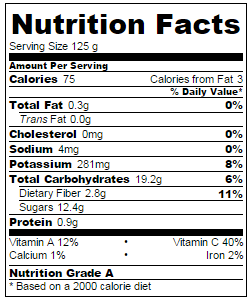 *All Nutrition Facts and Analysis according to caloriecount.about.com |
|